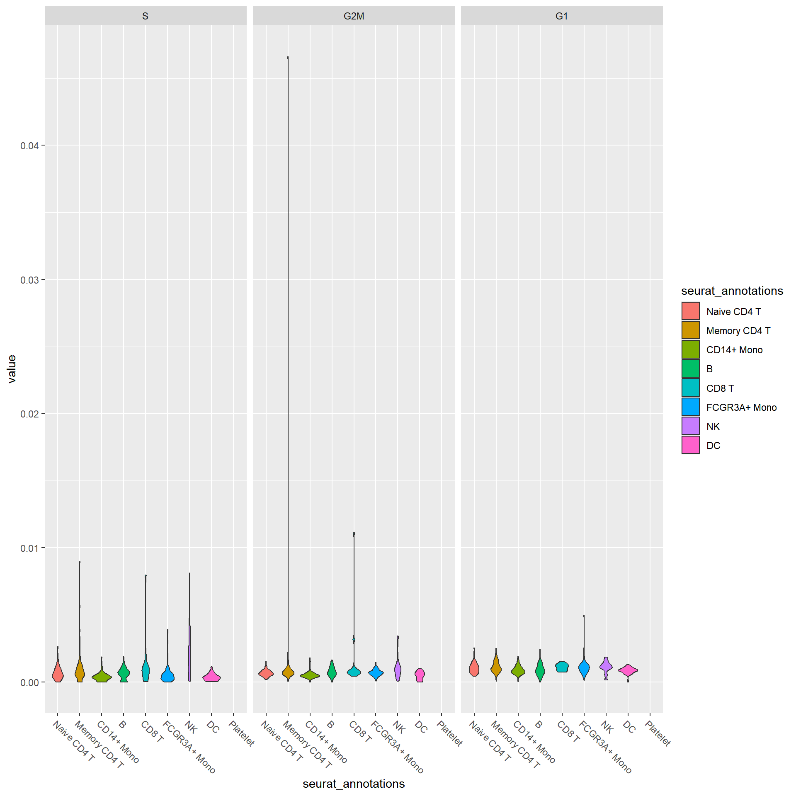
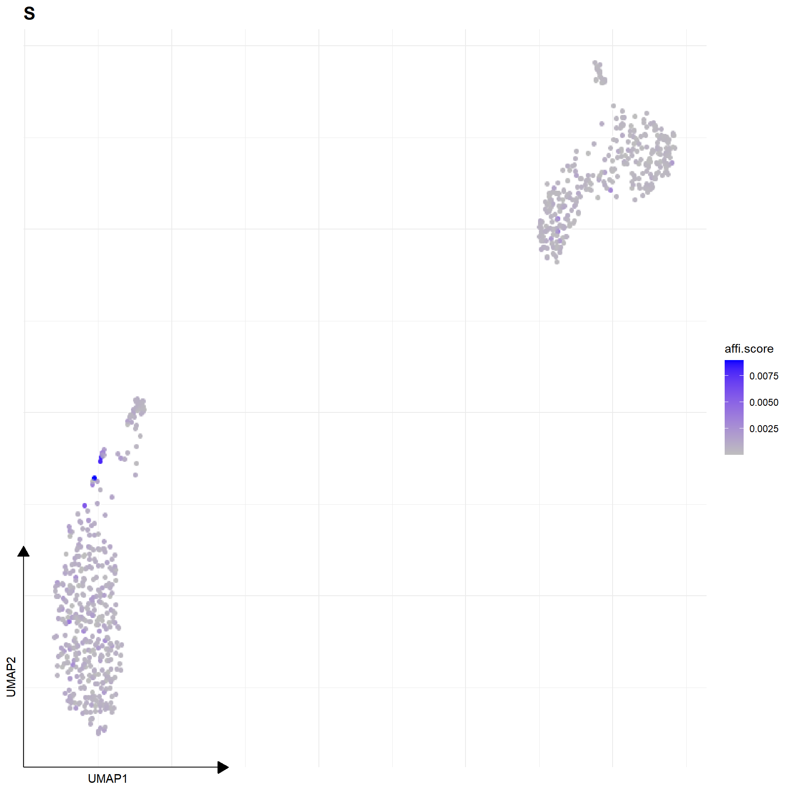
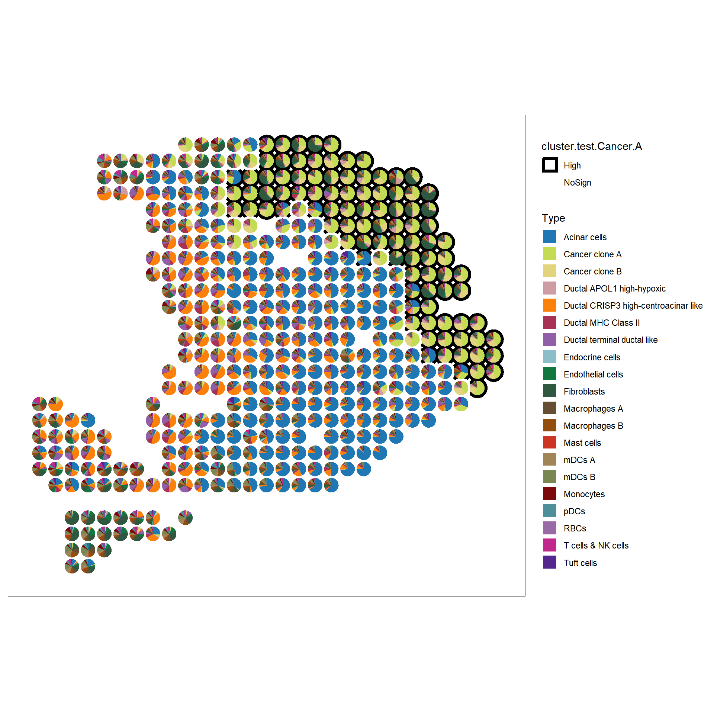
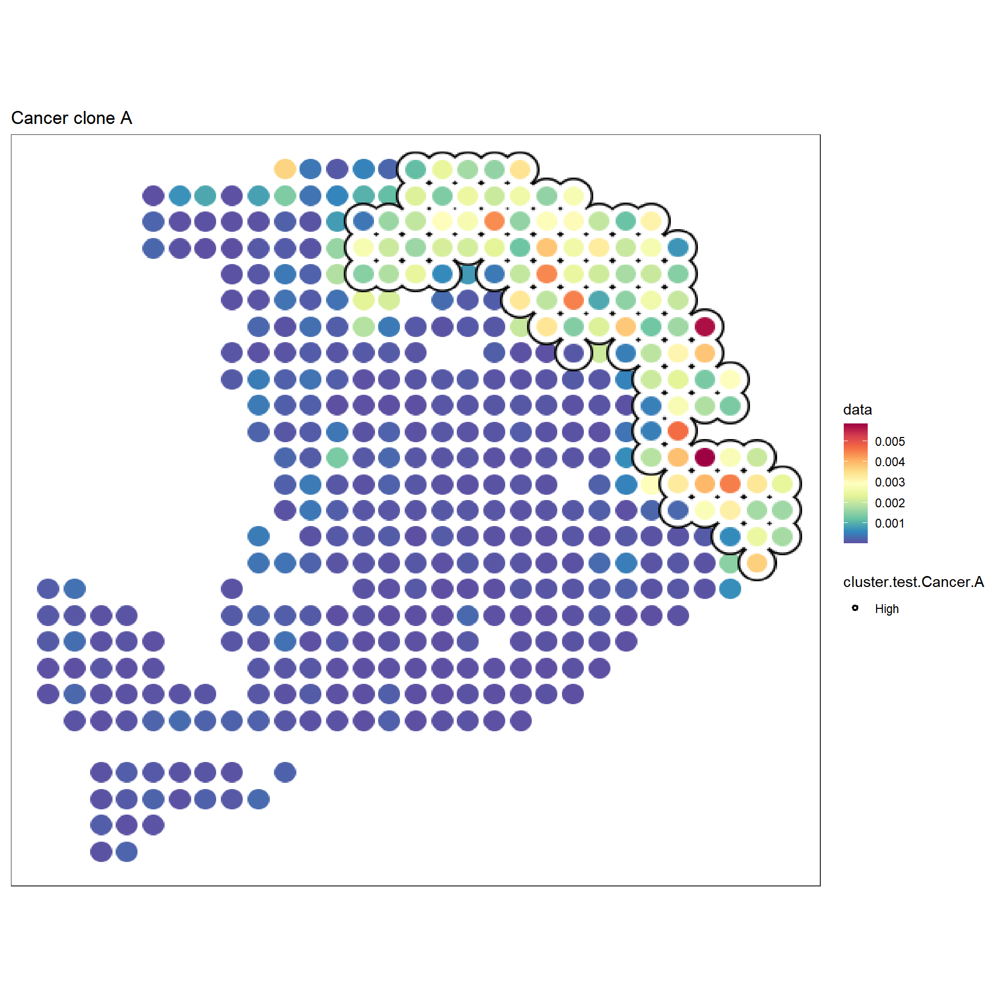
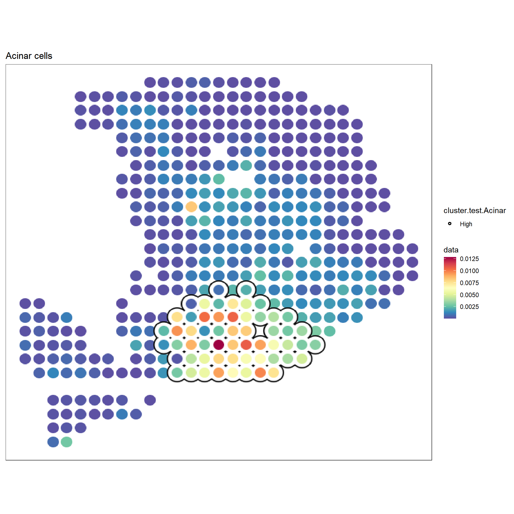
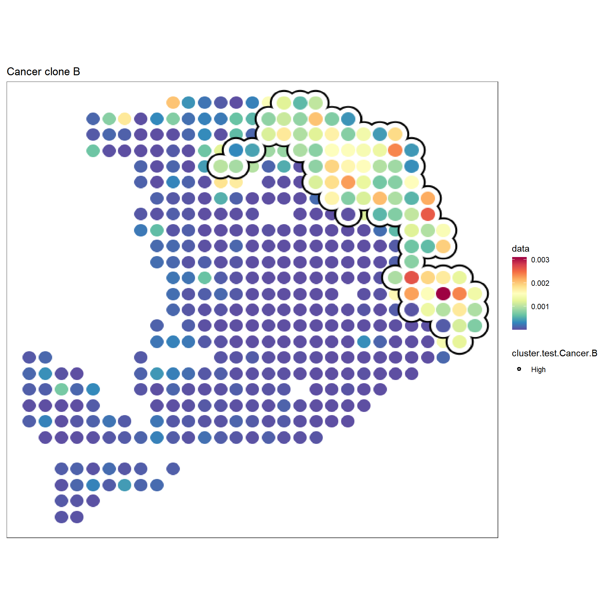

4 SVP
Robust analysis of ‘gene set’ activity in spatial or single-cell data.
library(SpatialExperiment)
library(SingleCellExperiment)
library(scuttle)
library(SVP)
library(ggplot2)
library(ggsc)4.1 runSGSA
Calculate the activity of gene sets in spatial or single-cell data with restart walk with restart and hyper test weighted. sceSubPbmc is a small SingleCellExperiment data set from pbmck3 which contains 1304 genes and 800 cells (extract randomly).
data(sceSubPbmc)
sceSubPbmc <- scuttle::logNormCounts(sceSubPbmc)
# the using runMCA to perform MCA (Multiple Correspondence Analysis)
# this is refer to the CelliD, but we using the Eigen to speed up.
# You can view the help information of runMCA using ?runMCA.
sceSubPbmc <- runMCA(sceSubPbmc, assay.type = 'logcounts')CellCycle.Hs is the S and G2M gene list are from the Seurat which refer to this article (doi:10.1126/science.aad050), the G1 gene list is from the G1_PHASE of Human Gene Set in MSigDB, but remove the duplicated records with S and G2M gene list.
# Next, we can calculate the activity score of gene sets provided.
# Here, we use the Cell Cycle gene set from the Seurat
# You can use other gene set, such as KEGG pathway, GO, Hallmark of MSigDB
# or TFs gene sets etc.
data(CellCycle.Hs)
sceSubPbmc <- runSGSA(sceSubPbmc, gset.idx.list = CellCycle.Hs, gsvaExp.name = 'CellCycle')## elapsed time is 1.090000 seconds## elapsed time is 0.020000 seconds## elapsed time is 0.030000 seconds## elapsed time is 0.020000 seconds## elapsed time is 0.020000 seconds## class: SVPExperiment
## dim: 1304 800
## metadata(0):
## assays(2): counts logcounts
## rownames(1304): LYZ GNG7 ... TAF1 TBRG4
## rowData names(0):
## colnames(800): ACGAACTGGCTATG GGGCCAACCTTGGA ...
## TTCAAGCTAAGAAC TTACACACGTGTTG
## colData names(2): seurat_annotations sizeFactor
## reducedDimNames(1): MCA
## mainExpName: RNA
## altExpNames(0):
## spatialCoords names(0) :
## imgData names(0):
## gsvaExps names(1) : CellCycle## class: SingleCellExperiment
## dim: 3 800
## metadata(0):
## assays(1): affi.score
## rownames(3): S G2M G1
## rowData names(4): exp.gene.num gset.gene.num
## gene.occurrence.rate geneSets
## colnames(800): ACGAACTGGCTATG GGGCCAACCTTGGA ...
## TTCAAGCTAAGAAC TTACACACGTGTTG
## colData names(2): seurat_annotations sizeFactor
## reducedDimNames(0):
## mainExpName: NULL
## altExpNames(0):## 6 x 3 sparse Matrix of class "dgCMatrix"
## S G2M G1
## ACGAACTGGCTATG 8.912990e-04 1.626142e-05 7.207289e-06
## GGGCCAACCTTGGA 9.413528e-06 1.606825e-09 2.603956e-08
## ACGAGGGACAGGAG 1.416664e-05 1.025511e-04 7.967855e-04
## CAGGTTGAGGATCT 1.322563e-06 1.550434e-12 1.456777e-11
## CATACTTGGGTTAC 4.964354e-05 6.391833e-04 8.241869e-04
## AAGCCATGAACTGC 5.136016e-04 7.587088e-05 8.797016e-04# Then you can use the ggsc or other package to visulize
# and you can try to use the findMarkers of scran or other packages to identify
# the different gene sets.
sceSubPbmc <- sceSubPbmc |>
scater::runPCA(assay.type = 'logcounts', ntop = 600) |>
scater::runUMAP(dimred = 'PCA')
# withReducedDim = TRUE, the original reducetion results from original gene features
# will be add the colData in the sce.cellcycle.
sce.cellcycle <- sceSubPbmc |> gsvaExp('CellCycle', withReducedDim=TRUE)
sce.cellcycle## class: SingleCellExperiment
## dim: 3 800
## metadata(0):
## assays(1): affi.score
## rownames(3): S G2M G1
## rowData names(4): exp.gene.num gset.gene.num
## gene.occurrence.rate geneSets
## colnames(800): ACGAACTGGCTATG GGGCCAACCTTGGA ...
## TTCAAGCTAAGAAC TTACACACGTGTTG
## colData names(2): seurat_annotations sizeFactor
## reducedDimNames(3): MCA PCA UMAP
## mainExpName: NULL
## altExpNames(0):sce.cellcycle |> sc_violin(
features = rownames(sce.cellcycle),
mapping = aes(x=seurat_annotations, fill = seurat_annotations)
) +
scale_x_discrete(guide=guide_axis(angle=-45))

library(scran)
cellcycle.test.res <- sce.cellcycle |> findMarkers(
group = sce.cellcycle$seurat_annotations,
test.type = 'wilcox',
assay.type = 'affi.score',
add.summary = TRUE
)
cellcycle.test.res$B## DataFrame with 3 rows and 16 columns
## self.average other.average self.detected other.detected
## <numeric> <numeric> <numeric> <numeric>
## S 0.000615131 0.000889084 1 1
## G2M 0.000760345 0.000723091 1 1
## G1 0.000914127 0.000891885 1 1
## Top p.value FDR summary.AUC
## <integer> <numeric> <numeric> <numeric>
## S 1 1.23356e-03 1.85034e-03 0.681366
## G2M 1 5.34716e-06 1.60415e-05 0.738194
## G1 1 1.70067e-02 1.70067e-02 0.354864
## AUC.Naive CD4 T AUC.Memory CD4 T AUC.CD14+ Mono
## <numeric> <numeric> <numeric>
## S 0.503904 0.425679 0.681366
## G2M 0.588138 0.496889 0.738194
## G1 0.401351 0.354864 0.504861
## AUC.CD8 T AUC.FCGR3A+ Mono AUC.NK AUC.DC
## <numeric> <numeric> <numeric> <numeric>
## S 0.400000 0.591453 0.238384 0.682437
## G2M 0.444444 0.556239 0.432323 0.701792
## G1 0.333333 0.394530 0.345455 0.513978
## AUC.Platelet
## <numeric>
## S 0.222222
## G2M 0.955556
## G1 0.9777784.2 runLISA
hpda_spe_cell_dec is the result of runSGSA with HPDA A sample from (doi:10.1038/s41587-019-0392-8). Each item in the matrix is the marker gene set activity in the spot. The marker gene set represents the cell type. We can use svp the investigate if a cell type cluters and if two cell types appear in the same region. Usage of local indicators of spatial association (LISA) to identify the hotspot in the spatial space
data(hpda_spe_cell_dec)
# r$> assay(hpda_spe_cell_dec)[1:5,1:5]
# 5 x 5 sparse Matrix of class "dgCMatrix"
# Spot1 Spot2 Spot3 Spot4 Spot5
# Acinar cells 3.283881e-04 6.931743e-06 4.820951e-05 1.882577e-03 9.269843e-04
# Cancer clone A 2.880388e-04 2.013973e-04 9.167013e-05 9.642225e-05 6.704812e-05
# Cancer clone B 1.569730e-04 2.744810e-04 2.151324e-04 1.502651e-05 4.283322e-06
# Ductal APOL1 high-hypoxic 3.132481e-05 3.902286e-04 4.240874e-05 3.140970e-06 1.464118e-04
# Ductal CRISP3 high-centroacinar like 9.546611e-05 5.025320e-03 2.112512e-03 1.140155e-03 3.873088e-03
svres <- runDetectSVG(hpda_spe_cell_dec, assay.type = 'affi.score',
method = 'moransi', action = 'only') ## elapsed time is 0.070000 seconds# r$> svres |> dplyr::arrange(rank) |> head()
# obs expect.moransi sd.moransi Z.moransi pvalue padj rank
# Cancer clone A 0.7086916 -0.00234192 0.02803920 25.35855 3.616015e-142 7.232030e-141 1
# Acinar cells 0.6958980 -0.00234192 0.02788076 25.04379 1.020141e-138 1.020141e-137 2
# Cancer clone B 0.6586104 -0.00234192 0.02803039 23.57985 3.102650e-123 2.068434e-122 3
# mDCs A 0.5824019 -0.00234192 0.02760394 21.18334 6.801396e-100 3.400698e-99 4
# Ductal CRISP3 high-centroacinar like 0.5605955 -0.00234192 0.02794187 20.14673 1.437344e-90 5.749375e-90 5
# Endothelial cells 0.5362475 -0.00234192 0.02757573 19.53128 2.976221e-85 9.920735e-85 6lisa.res12 <- hpda_spe_cell_dec |>
runLISA(
features = c(1, 2, 3),
assay.type = 'affi.score',
weight.method = "knn",
k = 10,
action = 'get',
)
lisa.res12## List of length 3
## names(3): Acinar cells Cancer clone A Cancer clone B## Gi E.Gi Var.Gi Z.Gi
## Spot1 0.0003594390 0.00234192 1.553580e-06 -1.5905315
## Spot2 0.0008854181 0.00234192 1.551111e-06 -1.1694717
## Spot3 0.0013421397 0.00234192 1.551438e-06 -0.8026710
## Spot4 0.0011632261 0.00234192 1.563140e-06 -0.9427625
## Spot5 0.0011940380 0.00234192 1.557730e-06 -0.9197108
## Spot6 0.0008942096 0.00234192 1.551895e-06 -1.1621191
## Pr (z != E(Gi)) cluster.no.test cluster.test
## Spot1 0.1117150 Low NoSign
## Spot2 0.2422136 Low NoSign
## Spot3 0.4221649 Low NoSign
## Spot4 0.3458024 Low NoSign
## Spot5 0.3577239 Low NoSign
## Spot6 0.2451871 Low NoSign## Gi E.Gi Var.Gi Z.Gi
## Spot1 0.0004249351 0.00234192 1.394101e-06 -1.623573
## Spot2 0.0003899767 0.00234192 1.393067e-06 -1.653793
## Spot3 0.0003702933 0.00234192 1.391701e-06 -1.671290
## Spot4 0.0004787373 0.00234192 1.391761e-06 -1.579331
## Spot5 0.0004788597 0.00234192 1.391386e-06 -1.579440
## Spot6 0.0005373218 0.00234192 1.393284e-06 -1.528836
## Pr (z != E(Gi)) cluster.no.test cluster.test
## Spot1 0.10446707 Low NoSign
## Spot2 0.09816948 Low NoSign
## Spot3 0.09466441 Low NoSign
## Spot4 0.11426017 Low NoSign
## Spot5 0.11423509 Low NoSign
## Spot6 0.12630517 Low NoSigncolData(hpda_spe_cell_dec)$`cluster.test.Cancer.A` <- lisa.res12[["Cancer clone A"]] |>
dplyr::pull(cluster.test)
colData(hpda_spe_cell_dec)$`cluster.test.Acinar` <- lisa.res12[["Acinar cells"]] |>
dplyr::pull(cluster.test)
colData(hpda_spe_cell_dec)$`cluster.test.Cancer.B` <- lisa.res12[["Cancer clone B"]] |>
dplyr::pull(cluster.test)p1 <- sc_spatial(hpda_spe_cell_dec,
features = rownames(hpda_spe_cell_dec),
mapping = aes(x=x, y=y, color=cluster.test.Cancer.A),
plot.pie = T,
pie.radius.scale = .8,
bg_circle_radius = 1.1,
color=NA,
linewidth=2
) + scale_color_manual(values=c("black", "white"))
p1
f1 <- sc_spatial(hpda_spe_cell_dec, features="Cancer clone A",
mapping=aes(x = x, y = y),
pointsize=10) +
geom_scattermore2(mapping = aes(bg_color=cluster.test.Cancer.A,
subset=cluster.test.Cancer.A=="High"),
bg_line_width = .16,
gap_line_width = .14,
pointsize = 7) +
scale_bg_color_manual(values=c('black'))
f1
f2 <- sc_spatial(hpda_spe_cell_dec, features="Acinar cells",
mapping=aes(x=x,y=y),
pointsize=10) +
geom_scattermore2(mapping = aes(bg_color=cluster.test.Acinar, subset=cluster.test.Acinar=="High"),
bg_line_width = .16,
gap_line_width = .14,
pointsize = 7) +
scale_bg_color_manual(values=c('black'))
f2
f3 <- sc_spatial(hpda_spe_cell_dec, features="Cancer clone B",
mapping=aes(x=x,y=y),
pointsize=10) +
geom_scattermore2(mapping = aes(bg_color=cluster.test.Cancer.B, subset=cluster.test.Cancer.B=="High"),
bg_line_width = .18,
gap_line_width = .14,
pointsize = 8) +
scale_bg_color_manual(values=c('black'))
f3
4.3 runLOCALBV
explore the local bivariate relationship in the spatial space.
res1 <- hpda_spe_cell_dec |> runLOCALBV(
features1 = 'Cancer clone A',
features2 = 'Cancer clone B',
assay.type='affi.score'
)
res1
res1[['Cancer clone A_VS_Cancer clone B']] |> head()
# LocalLee Gi E.Gi Var.Gi Z.Gi Pr (z > E(Gi)) cluster.no.test cluster.test
# Spot1 0.2656572 0.0007993283 0.00234192 1.685012e-06 -1.1883644 0.8826551 Low NoSign
# Spot2 0.1928726 0.0006520670 0.00234192 3.060135e-06 -0.9660035 0.8329788 Low NoSign
# Spot3 0.2098906 0.0007134499 0.00234192 2.544445e-06 -1.0209003 0.8463492 Low NoSign
# Spot4 0.2609793 0.0007131499 0.00234192 2.545557e-06 -1.0208654 0.8463409 Low NoSign
# Spot5 0.1769749 0.0007300670 0.00234192 3.059710e-06 -0.9214789 0.8215998 Low NoSign
# Spot6 0.1736672 0.0004656579 0.00234192 2.175086e-06 -1.2721999 0.8983489 Low NoSign